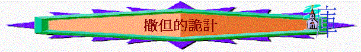

二.撒但的詭計
引言：
「所以，諸天和住在其中的，你們都快樂吧！只是地與海有禍了！因為魔鬼知道自己的時候不多，就氣忿忿的下到你們那裡去了。」」啟
12:12
「免得撒但趁著機會勝過我們，因我們並非不曉得他的詭計。」林後
2:11
1.試探人
A.對夏娃的試探
「耶和華
神所造的，惟有蛇比田野一切的活物更狡猾。蛇對女人說：「神豈是真說不許你們吃園中所有樹上的果子嗎？」」創3:1
a.懷疑神的說話
「神豈是真說……….」
b.扭曲犯罪後果
「蛇對女人說：「你們不一定死；」創3:4
(1)削弱後果
〜「不一定死」
(2)美化結果
〜「便如神能知道善惡」
c.用世界的事情
「於是女人見那棵樹的果子好作食物，也悅人的眼目，且是可喜愛的，能使人有智慧，就摘下果子來吃了，又給他丈夫，他丈夫也吃了。」創3:6
(1)肉體的情慾------「好作食物」
(2)眼目的情慾------「悅人的眼目」
(3)今生的驕傲------「能使人有智慧」
B.對耶穌的試探
a.用世界的吸引
(1)肉體的情慾
「他禁食四十晝夜，後來就餓了。那試探人的進前來，對他說：「你若是神的兒子，可以吩咐這些石頭變成食物。」」太4:2-3
(2)今生的驕傲
「魔鬼就帶他進了聖城，叫他站在殿頂（頂原文作翅）上，對他說：「你若是神的兒子，可以跳下去，因為經上記著：主要為你吩咐他的使者用手托著你，免得你的腳碰在石頭上。」」太4:5-6
(3)眼的情慾
「魔鬼又帶他上了一座最高的山，將世上的萬國與萬國的榮華都指給他看，對他說：「你若俯伏拜我，我就把這一切都賜給你。」」太4:8-9
b.用使命的催逼
～祂來到世間，為要証明自己是君王，彌賽亞，擁有權柄，也應驗聖經所說的話，並使萬人都歸信祂
(1)權柄可顯露
～若祂吩咐石頭變食物，祂就可顯出祂王者的權柄，為何不吩咐！
(2)王者可突出
～若祂跳下來，必有很多人見到祂，天使也托著祂，豈不是可顯露祂王者的身份，為何不跳！
(3)萬國盡歸手
～只要簡單向撒但拜一拜，萬國也屬祂，為何不拜呢！
c.用聖經的話語
「對他說：「你若是神的兒子，可以跳下去，因為經上記著：主要為你吩咐他的使者用手托著你，免得你的腳碰在石頭上。」」太4:6
2.擊打人
A.加苦難
「於是撒但從耶和華面前退去，擊打約伯，使他從腳掌到頭頂長毒瘡。」伯2:7
「又恐怕我因所得的啟示甚大，就過於自高，所以有一根刺加在我肉體上，就是撒但的差役要攻擊我，免得我過於自高。」林後12:7
B.殺害人
「你們是出於你們的父魔鬼，你們父的私慾你們偏要行。他從起初是殺人的，不守真理，因他心裡沒有真理。他說謊是出於自己；因他本來是說謊的，也是說謊之人的父。」約8:44
3.激動人
A.利用個別的人物----大衛
「撒但起來攻擊以色列人，激動大衛數點他們。」代上21:1
B.攻擊整體的選民
「約押說：「願耶和華使他的百姓比現在加增百倍。我主我王啊，他們不都是你的僕人嗎？我主為何吩咐行這事，為何使以色列人陷在罪裡呢？」」代上21:3
C.認識屬靈的原則
「神不喜悅這數點百姓的事，便降災給以色列人。」代上21:7
〜牠知道數民事件是神不喜悅，神必會刑罰選民，撒但用此屬靈原則，使選民犯罪，嘗試用神擊打選民(當然神也是全知的神，祂也藉萬事互相效力，叫選民至終得益)
4.迷惑人
「大龍就是那古蛇，名叫魔鬼，又叫撒但，是迷惑普天下的。他被摔在地上，他的使者也一同被摔下去。」啟12:9
A.說謊者
「你們是出於你們的父魔鬼，你們父的私慾你們偏要行。他從起初是殺人的，不守真理，因他心裡沒有真理。他說謊是出於自己；因他本來是說謊的，也是說謊之人的父。」約8:44
「那撒但一會的，自稱是猶太人，其實不是猶太人，乃是說謊話的，我要使他們來，在你腳前下拜，也使他們知道我是已經愛你了。」啟3:9
B.假天使
「這也不足為怪，因為連撒但也裝作光明的天使。」林後11:14
「但無論是我們，是天上來的使者，若傳福音給你們，與我們所傳給你們的不同，他就應當被咒詛。」加1:8
C.假使徒
「那等人是假使徒，行事詭詐，裝作基督使徒的模樣。」林後11:13
「所以他的差役，若裝作仁義的差役，也不算希奇。他們的結局必然照著他們的行為。」林後11:15
D.假先知
「親愛的弟兄啊，一切的靈，你們不可都信，總要試驗那些靈是出於神的不是，因為世上有許多假先知已經出來了。」約壹4:1
「那迷惑他們的魔鬼被扔在硫磺的火湖裡，就是獸和假先知所在的地方。他們必晝夜受痛苦，直到永永遠遠。」啟20:10
E.謬妄靈
「凡靈不認耶穌，就不是出於神；這是那敵基督者的靈。你們從前聽見他要來，現在已經在世上了。」約壹4:3
F.行奇事
「他因賜給他權柄在獸面前能行奇事，就迷惑住在地上的人，說：「要給那受刀傷還活著的獸作個像。」」啟13:14
G.鬼道理
「聖靈明說，在後來的時候，必有人離棄真道，聽從那引誘人的邪靈和鬼魔的道理。」提前4:1
「弟兄們，論到我們主耶穌基督降臨和我們到他那裡聚集，我勸你們：無論有靈、有言語、有冒我名的書信，說主的日子現在（現在或作就）到了，不要輕易動心，也不要驚慌。人不拘用什麼法子，你們總不要被他誘惑；因為那日子以前，必有離道反教的事，並有那大罪人，就是沉淪之子，顯露出來。」帖後2:1-3
H.假神明
「此等不信之人被這世界的神弄瞎了心眼，不叫基督榮耀福音的光照著他們。基督本是神的像。」林後
4:4
5.控訴人
「若有叫人憂愁的，他不但叫我憂愁，也是叫你們眾人有幾分憂愁。我說幾分，恐怕說得太重。這樣的人受了眾人的責罰也就夠了，」林後2:5-6
「免得撒但趁著機會勝過我們，因我們並非不曉得他的詭計。」林後2:11
「我聽見在天上有大聲音說：「我神的救恩、能力、國度、並他基督的權柄，現在都來到了！因為那在我們神面前晝夜控告我們弟兄的，已經被摔下去了。」啟12:10
6.附人體
～四福音多記載鬼附和趕鬼的事。鬼是能使人成了啞巴、瞎眼、無知覺和自毀性的瘋狂。被鬼附的人所受的痛苦，遠超過生病。被鬼附的人，不只要自毀，他更要毀害他人。
7.阻擋神
A.抵擋神的工作
「天使（原文作他）又指給我看：大祭司約書亞站在耶和華的使者面前；撒但也站在約書亞的右邊，與他作對。」亞3:1
「從此，耶穌才指示門徒，他必須上耶路撒冷去，受長老、祭司長、文士許多的苦，並且被殺，第三日復活。彼得就拉著他，勸他說：「主啊，萬不可如此！這事必不臨到你身上。」耶穌轉過來，對彼得說：「撒但，退我後邊去吧！你是絆我腳的；因為你不體貼神的意思，只體貼人的意思。」」太16:21-23
「弟兄們，你們記念我們的辛苦勞碌，晝夜做工，傳神的福音給你們，免得叫你們一人受累。」帖前2:9
〜在聖經歷史中，撒但千方百計阻擋神的工作，例如牠嘗試用方法令聖殿不被重建，令主耶穌不行十的路，令保羅宣教旅程受阻。
B.奪去神的話語
「凡聽見天國道理不明白的，那惡者就來，把所撒在他心裡的奪了去；這就是撒在路旁的了。」太13:19